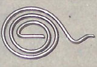
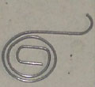
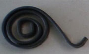
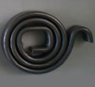
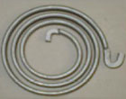

AMS fabrique différents types de ressorts spirale :
Ressorts de torsion spirales
Ressort avec fil plat laminé avec épaisseurs de 0.3 mm à 5.00 mm et largeurs jusqu'à 12 mm.
Nuances de fil employés pour ces ressorts : Acier C65 recuit, C75 recuit.
Un traitement thermique après fabrication est indispensable afin que le ressort adopte ses caractéristiques mécaniques définitives.
|  |  |  |  |  |
Ressort de torsion spirale fil plat 0.85x2.9 mm |
Ressort de torsion spirale fil plat 2.5x0.80 mm |
Ressort de torsion spirale fil plat 5.0X1.3 mm |
Ressorts de torsion spirale fil plat 9.0x3.0 mm |
Ressort de torsion spirale fil plat 12.0x 3.8 mm Traitement anti-bruit |
Les principaux critères de performance du ressort de torsion spirale sont :
Les couples :
Résistance exercée par le ressort selon un ou plusieurs angles de rotation. L'unité de contrôle est le Newton-mm.
Le seuil de tolérance varie entre ±10 et ±15 %, cette caractéristique du ressort se mesure à l'aide d'un torsiomètre avec capteur de force.
L'endurance du ressort :
Durée d'efficacité du ressort selon un nombre de cycle défini par l'utilisateur (1 cycle = angle libre à angle préconisé)
Des bancs d'endurances standards ou spécifiques (environnement fonctionnel) nous permettent de maîtriser ce critère.
La géométrie du ressort :
diamètre corps, longueur de patte, carré ou noyau, angle libre sont maitrisés en production grace à des lasers ou caméras. Après mesure, ils oriente le ressort dans le bac "pièces bonnes" ou bac de ressorts non conformes.
Paramètres influents du ressort : le diamètre du fil, la nuance matière, le diamètre du corps, le nombre de spires, la longueur des branches.
Le sens d'enroulement du ressort (gauche ou droit) permet d'adapter le ressort selon son utilisation (sens des aiguilles
d'une montre ou inversé).
La position des pattes du ressort (angle libre) est calculée pour un fonctionnement optimal du ressort et garantir les couples.
Nous utilisons différents traitements de surface :
delta seal, dacromet, zingage, phosphatation, ces procédés garantissent des protections contre la corrosion et la bruyance du ressort.
© 2008-2011 fabricant de ressorts AMS (Ateliers Mécaniques de Saucourt) | Mentions légales
création site